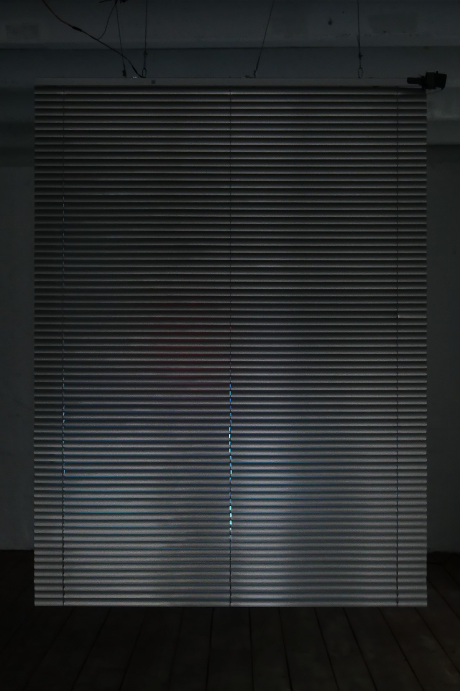
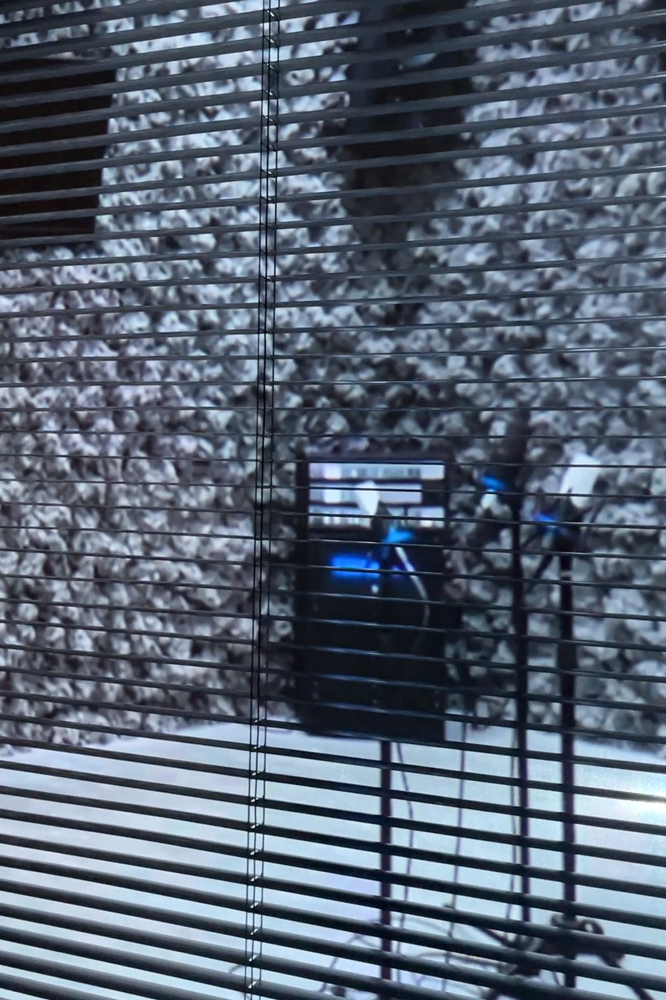
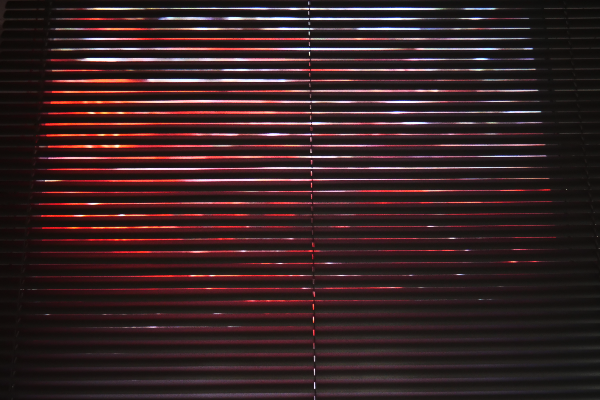

Intervals of Awareness is an interactive installation that explores how inner potential energy, which already exists within us, becomes perceived and revealed through consciousness. The work began with the question: Why do we feel full of energy at certain moments, and at other times feel completely lethargic? Rather than creating new possibilities, this project investigates how we become aware of and experience the potential that already exists.
Philosophically, the work is grounded in reflections on the relationship between potentiality and actuality. It spatially interprets the relational structure between energy (Shakti) and consciousness (Shiva), as well as the concept of the seven chakras, which symbolize the flow of energy. In the installation, the blind represents the “opening” and “closing” of the chakras. When no audience member is present, the blind remains closed and the video stops. When someone approaches, a presence sensor is activated, recorded mood data is read, the blind opens, and the video begins to play.


The video runs for seven minutes. The degree to which the blind opens and closes is determined by personal mood data recorded three times a day—morning, afternoon, and evening. Emotional states were documented on a scale from 0 (completely closed) to 3 (fully open). One week of data forms a single video cycle. The spatial imagery in the video was generated based on atmospheres connected to the psychological characteristics of each chakra. Ultimately, this work is not about “creating” possibility, but about recognizing the potential that already exists— visualizing the intermittent moments when consciousness becomes clear: Intervals of Awareness.


[Tools]
• Arduino (hardware interaction control)
• TouchDesigner (real-time interactive system & data mapping)
• Presence Sensor (audience detection)
• Servo Motor (blind movement mechanism)
• Custom Mood Data Logging System (daily emotional data recording)
• AI Image Generation Tool (spatial image creation)
• Video Editing Software (video composition)
